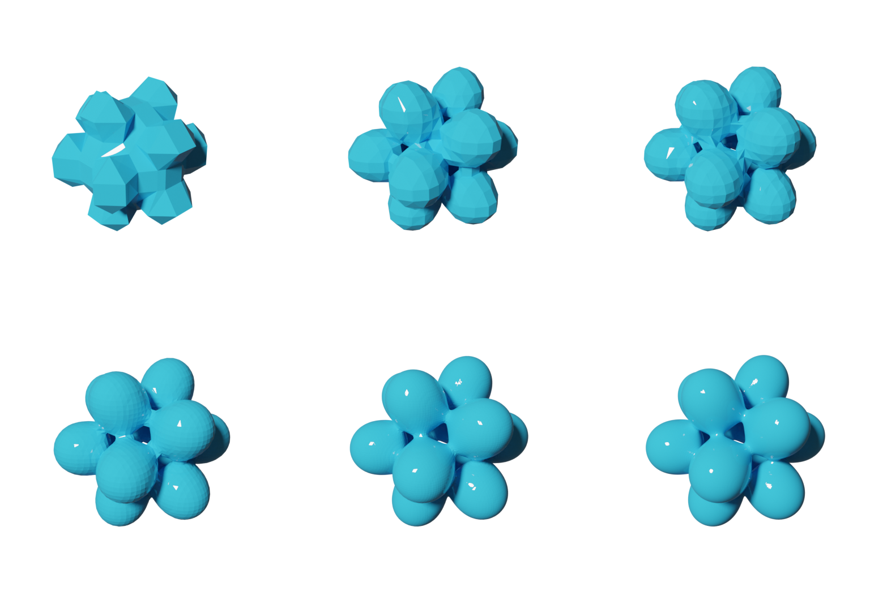
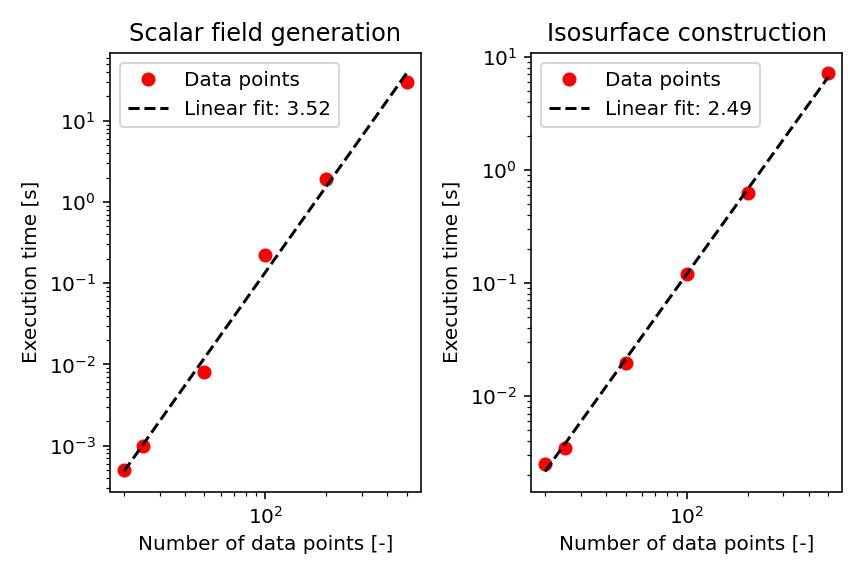

Examples
Icosahedral metaballs
Here, we provide a simple example how to use PyTessel. In this example, we will be constructing the isosurface of a scalar field corresponding to 12 metaballs arranged such that they lie on the vertices of a regular icosahedron.
In this script, we will be exploring the quality of the final isosurface as
function of the number of sampling points originally taken when constructing
the underlying scalar field. As can be seen in the main() function
of the script, we loop over the array [10,20,25,50,100,200] and execute
the marching_cubes algorithm for differently sampled scalar fields and
construct a separate isosurface for each scalar field.
from pytessel import PyTessel
import numpy as np
def main():
"""
Build 6 .ply files of increasing quality
"""
pytessel = PyTessel()
for nrpoints in [10,20,25,50,100,200]:
sz = 3
x = np.linspace(-sz, sz, nrpoints)
y = np.linspace(-sz, sz, nrpoints)
z = np.linspace(-sz, sz, nrpoints)
xx, yy, zz, field = icosahedron_field(x,y,z)
unitcell = np.diag(np.ones(3) * sz * 2)
pytessel = PyTessel()
isovalue = 3.75
vertices, normals, indices = pytessel.marching_cubes(field.flatten(), field.shape, unitcell.flatten(), isovalue)
pytessel.write_ply('icosahedron_%03i.ply' % nrpoints, vertices, normals, indices)
def icosahedron_field(x,y,z):
"""
Produce a scalar field for the icosahedral metaballs
"""
phi = (1 + np.sqrt(5)) / 2
vertices = [
[0,1,phi],
[0,-1,-phi],
[0,1,-phi],
[0,-1,phi],
[1,phi,0],
[-1,-phi,0],
[1,-phi,0],
[-1,phi,0],
[phi,0,1],
[-phi,0,-1],
[phi,0,-1],
[-phi,0,1]
]
xx,yy,zz = np.meshgrid(x,y,z)
field = np.zeros_like(xx)
for v in vertices:
field += f(xx,yy,zz,v[0], v[1],v[2])
return xx,yy,zz,field
def f(x,y,z,X0,Y0,Z0):
"""
Single metaball function
"""
return 1 / ((x - X0)**2 + (y - Y0)**2 + (z - Z0)**2)
if __name__ == '__main__':
main()
Each of the isosurfaces are rendered using Blender. The result is found in the image below. From this image, we can see that upon increasing the number of sample points, we gradually increase the quality of the isosurface.
Execution times
To get an impression on the performance of the program, we here compare the execution times for scalar field generation and isosurface constructing as function of the number of sampling points. As is typically observed, the generation of the scalar field takes more time than the actual construction of the isosurface.
Number of points |
Scalar field generation (seconds) |
Isosurface construction (seconds) |
|---|---|---|
10 |
0.000000 |
0.001002 |
20 |
0.000499 |
0.004001 |
25 |
0.000500 |
0.006998 |
50 |
0.026501 |
0.032499 |
100 |
0.212501 |
0.155500 |
200 |
1.865499 |
0.817000 |
We can also assess the complexity of the algorithm by sampling the execution time as function of the number of data points as shown in the image below. On the basis of the slope, we find that scalar field generation scales by \(\sim N^{3.5}\) whereas isosurface generation scales by \(\sim N^{2.5}\).
